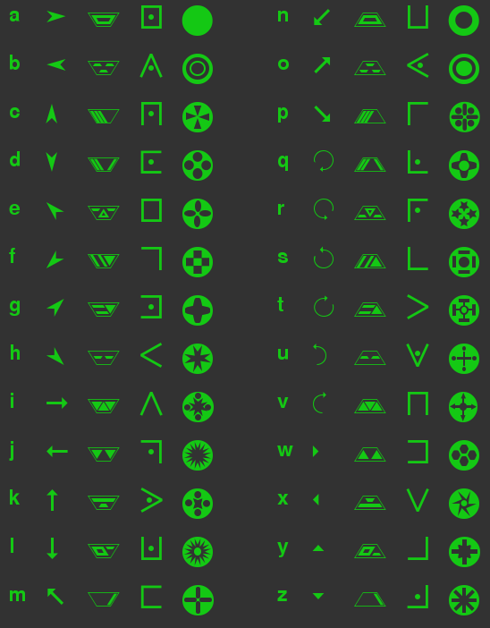

The terminal is a local multiplayer hacking game inspired by "Keep Talking and Nobody Explodes". The aim of the game is to hack into a computer terminal by following the instructions in the hacking manual, before the system locks you out.
Only one person can see and interact with the computer, but is not allowed to view the hacking manual. The other players can view the manual, but are not allowed to see the computer. The two groups must communicate with each other in order to gain access before timer runs out.
We have recovered a shredded list of passwords from a nearby dumpster. Despite our best efforts to piece it back together, it is still hard to make out the passwords. Below are our best guesses for the passwords of each user - perhaps with a bit of extra work you can work which are correct?
You will have a number of attempts to log in before the password is reset. Using our cracked login program, you will be able to see how many characters were correct - the right letter in the right position - for each attempt. You should be able to work out the password using this information.
| User | Possible Passwords |
|---|---|
| root | flask, great, force, gleam, brick, flute, blast, feast, flick, flank |
| ro0t | tusks, blush, askew, train, asset, burns, tries, turns, basks, busks |
| rewt | maple, pearl, lapel, myths, cycle, apple, ladle, ample, maize, capel |
| 00142331 | trice, racer, tours, glaze, trail, raise, slick, track, grace, trace |
| 00143231 | court, truce, fords, flirt, cruel, craft, tours, chart, fours, count |
| 01043231 | eagle, ariel, glare, gains, earns, gauge, angle, early, agile, engle |
Some organisations use images rather than text passwords in order to authenticate users. Each user selects a set of images to identify themselves. The visual login process presents the user with three of these images, and one other image - the user must select the other image in order to be granted access. Selecting an incorrect image will result in a temporary lockout.
Most users select images that represent their likes and passtimes, which allows the system to be easily bypassed with a bit of research. We've used some social engineering techniques to identify the likes and dislikes for several users - see if you can use this information to obtain access.
| User | Likes |
|---|---|
| A | Cars, Cats, Dogs, Planes, Music, Flowers |
| B | Skateboarding, Horses, Music, Dogs, Food, Wine |
| C | Books, Computers, Cats, Archery, Boats, Cars |
| D | Soccer, Basketball, Baseball, Archery, Skateboarding, Tennis |
| E | Books, Wine, Planes, Computers, Music, Horses |
| F | Soccer, Tennis, Flowers, Cats, Boats, Archery |
| G | Food, Wine, Beer, Planes, Basketball, Baseball |
| H | Cars, Beer, Soccer, Tennis, Food, Computers |
You'll sometimes need to use a hex editor to crack sprograms in order to bypass security checks. The hex editor shows the code of the program line-by-line. Each line is made up of 6 numbers.
In order to crack a program, you will need to modify the lines of code which make up the program according to the following rules. The hex editor will allow you to edit the lines of code one-by-one, replacing one value in the line with another value. Follow the rules below in order to determine the correct actions for each line:
Some systems you encounter will have encrypted filesystems, which will need to be unencrypted before you can progress further with a hack.
TODO Some of our target devices have hardware security support in the form of on-board expansion chips. These will prevent us from gaining access unless we can somehow disable them. Luckily we were able to 'obtain' a copy of the hardware specifications, which should help you bypass this protection.
Be careful - booting the system with an incorrect hardware configuration may affect the system clock, which may reduce the amount of time you have before you are logged out.
Each system may have one or more security chip on its motherboard, with an associated pull-down resistor. In order to bypass the security system, you must remove the chip, its pull-down resistor, or both, based on the information in the following tables.
Table 1: Use the last character of the security chip's identifier and the value of the chip's pull-down resistor to determine the correction action.
| Resistor Value | Odd number | Event number | Zero | Letter |
|---|---|---|---|---|
| 10 kOhms | N | C | R | B |
| 20 kOhms | C | C | B | R |
| 30 kOhms | R | R | C | C |
| 40 kOhms | B | N | R | C |
| 50 kOhms | T2, row 1 | T2, row 4 | N> | T2, row 3 |
| 60 kOhms | T2, row 5 | C | T2, row 2 | T2, row 6 |
Key:
Table 2: Use the row given by table 1, and the first character of the terminal name to determine the correct action.
| Row | Odd number | Even number | Zero | Letter |
|---|---|---|---|---|
| Row 1 | C | N | R | C |
| Row 2 | R | C | R | C |
| Row 3 | R | B | C | R |
| Row 4 | C | R | C | R |
| Row 5 | N | C | R | B |
| Row 6 | C | C | C | R |
Key:
Table 3: This table shows the values of the different resistors, based on the coloured markings (read from left to right) printed on the body of the resistor.
| Markings | Value |
|---|---|
| red-red-yellow-green | 10 kOhms |
| red-black-yellow-green | 20 kOhms |
| yellow-blue-blue-red | 30 kOhms |
| red-blue-blue-yellow | 40 kOhms |
| green-red-blue-green | 50 kOhms |
| green-black-blue-green | 60 kOhms |